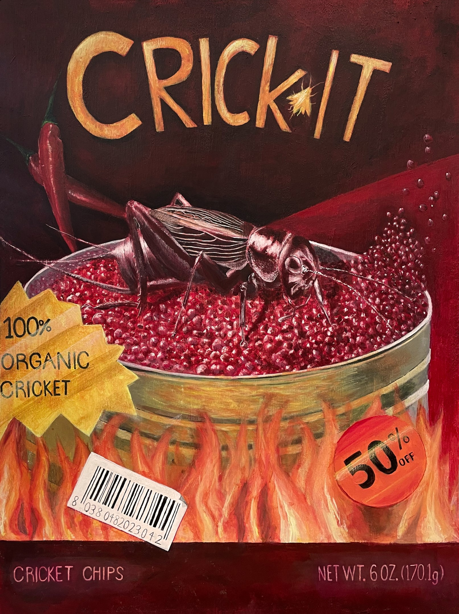
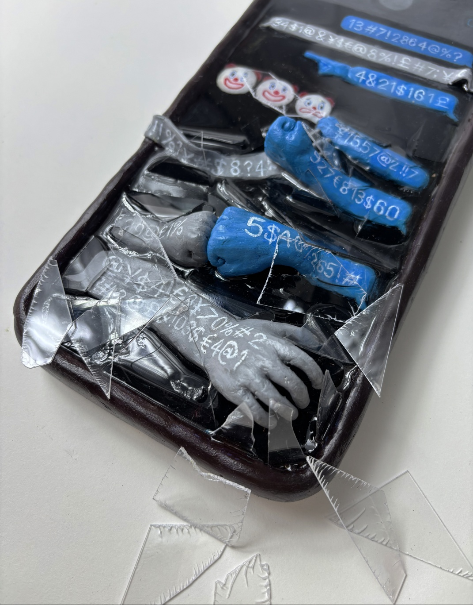
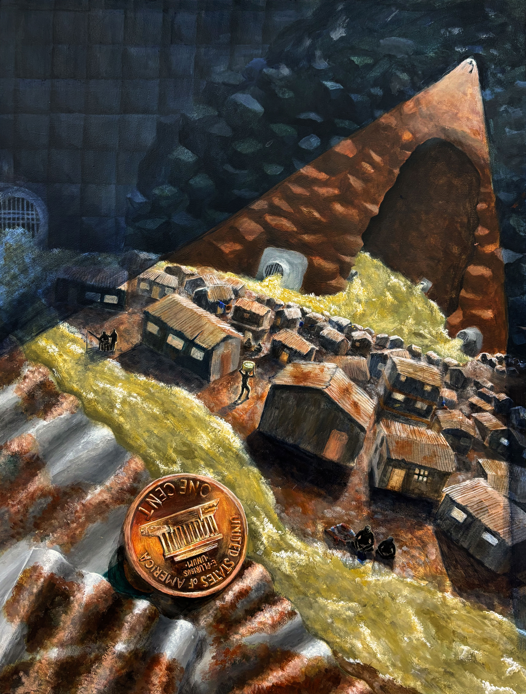
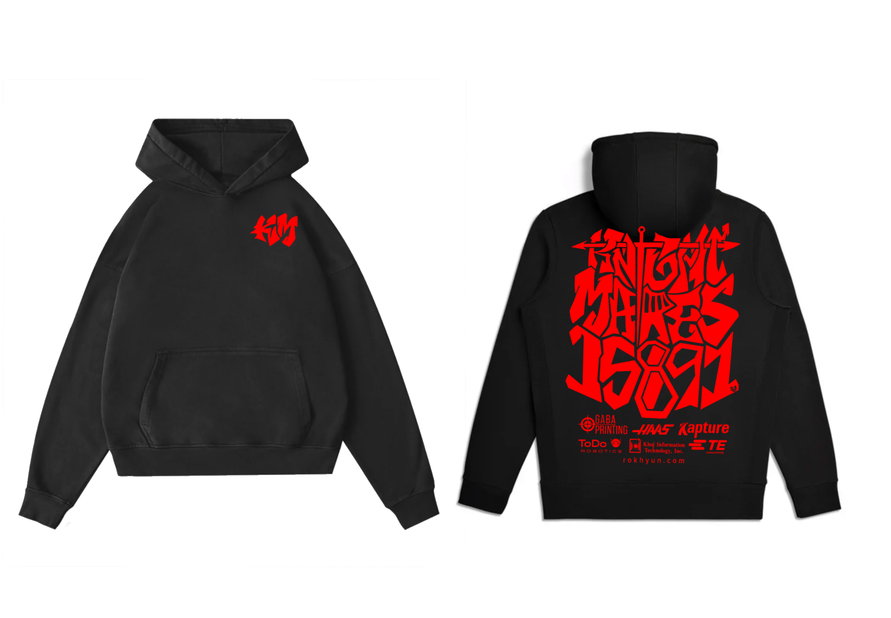

Plight of Oblivion

Medium: Acrylic on Canvas
Description: In a room full of treasure lies a deceitful monster, ready to consume whomever oblivious enough to approach a chest surrounded by the remains of the predecessors.
Facing My Fears

Medium: Acrylic on Canvas
"Facing My Fears" is a painting that captures an iridescent and dreamlike atmosphere. At its heart, the artwork portrays a courageous boy wielding his blankets as a sword against the monsters emerging from his nightmares.
Sound-Responsive Robot Art
Medium: Acrylic on Canvas
A scrumptious futuristic bag of cricket chips! Multiple factors such as climate change, overpopulation, and dwindling made considering alternative food sources important, and insects stand out as a realistic choice.
Behind the Screen, Beyond Respect
Medium: Acrylic on Canvas
Two people fight over text as the argument intensifies: messages start extending beyond the screen, soon becoming a discourse the phone screen cannot handle.
The Hidden Glow

Medium: Acrylic on Canvas
A ghostly goblin shark is surrounded by bioluminescent marine organisms, each glowing faintly against the dark abyss. The intricate interplay of life forms, from microscopic plankton to jellyfish, evokes the fragile balance of this alien ecosystem. The artwork highlights both the mystery and interconnectedness of deep-sea life, illuminating a hidden world often unseen by the human eye.
Under the Sewer
Medium: Acrylic on Canvas
"Under the Sewer" depicts a dark, slum-like world where a symbolic penny represents the corrupting lure of materialism. A boy gazes from a sewage hole, drawn by a dropped coin.
KnightMares Hoodie
Medium: Procreate
Merch design for my robotics team, KnightMares robotics (Titanium Knights)